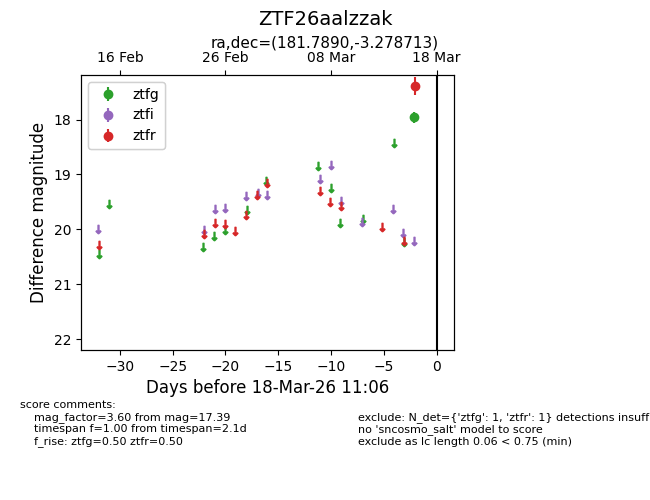
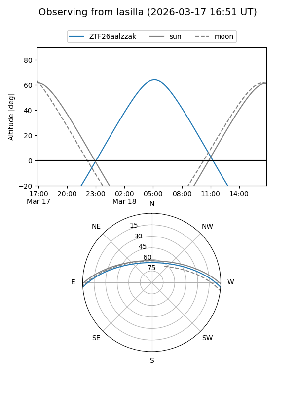
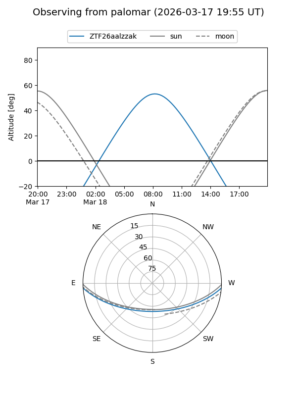

ZTF26aalzzak
Target ZTF26aalzzak at 2026-03-18 11:08
Aliases and brokers:
FINK: link
Lasair: link
ALeRCE: link
alt names
ZTF26aalzzak (ztf,fink_ztf)
Coordinates:
equatorial (ra, dec) = 181.7890,-3.27871
equatorial (HMS+DMS) = 12:07:09.35,-03:16:43.37
galactic (l, b) = (281.8651,+57.77042)
Flags:
Photometry:
last ztfg=17.96, ztfr=17.39
1 ztfg, 1 ztfr detections
Lightcurve

Visibility


Additional plots